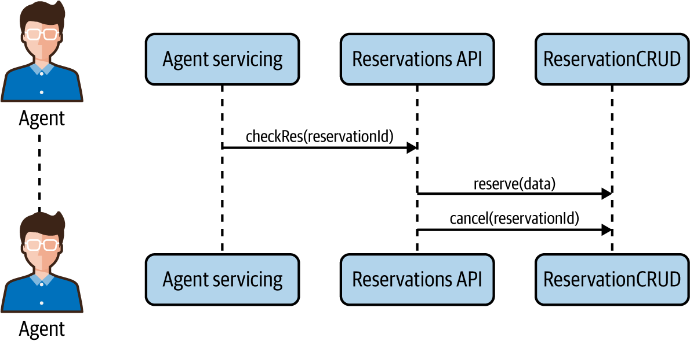
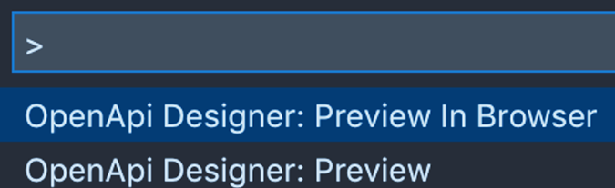
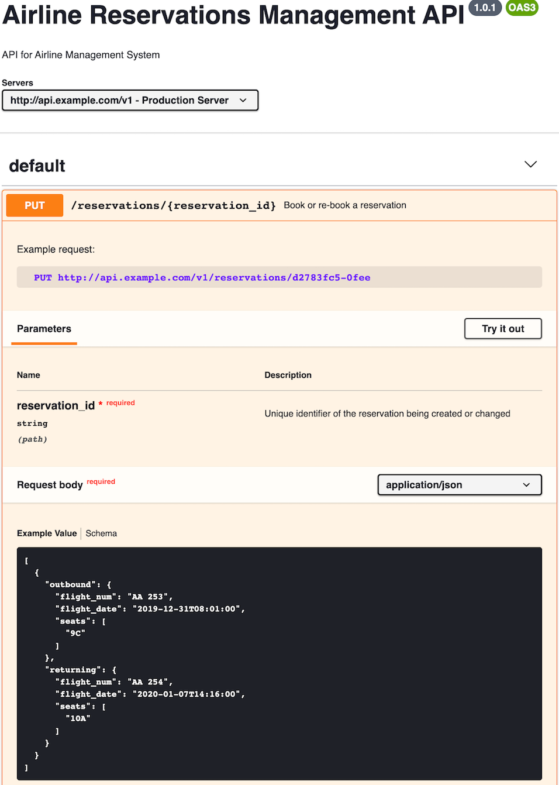
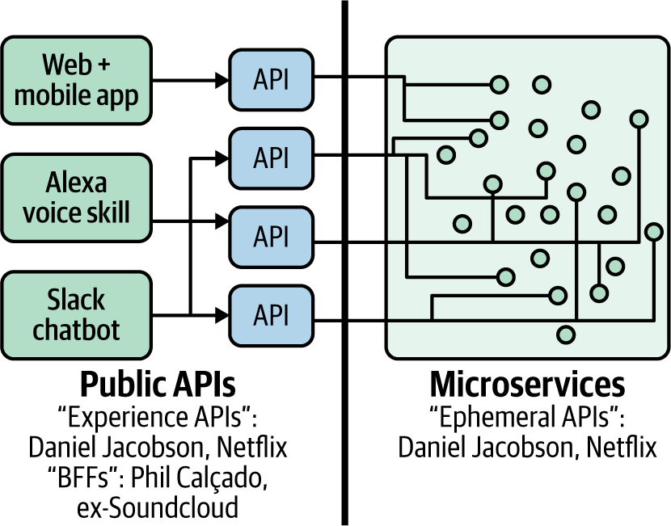

Nếu còn nhớ, trong Chương 1, chúng ta đã nói rằng lợi ích chính của việc áp dụng kiến trúc microservices là khả năng tăng tốc độ phát triển mà không làm tổn hại đến độ an toàn của hệ thống, ngay cả ở quy mô lớn. Đây là một lợi ích cực kỳ quan trọng đối với các tổ chức đang xử lý những bài toán có độ phức tạp đáng kể. Tuy nhiên, hãy lưu ý rằng điều này chỉ xảy ra như kết quả của một thiết kế có chủ đích, chứ không phải tình cờ. Ngoại trừ những trường hợp đơn giản nhất, gần như không thể tiến hóa dần tới một kiến trúc microservices thành công nếu không có một thiết kế hệ thống hiệu quả, tường minh và xuyên suốt từ đầu đến cuối.
Trong chương này, chúng ta sẽ giới thiệu một quy trình mang tính tiến hóa để thiết kế microservices. Phương pháp này ban đầu được một trong các tác giả xây dựng tại một startup y tế do ông đồng sáng lập, và sau đó đã được triển khai thành công trong nhiều dự án tại các công ty khác. Cách tiếp cận linh hoạt này đã chứng minh hiệu quả tương đương cho cả những tổ chức nhỏ đang xử lý các bài toán phức tạp; chẳng hạn như một startup tiên phong đang tạo ra cuộc cách mạng trong ngành y tế rộng lớn, cũng như một tổ chức lớn với hàng nghìn kỹ sư phần mềm trải rộng trên hàng trăm nhóm.
Hệ thống thiết kế microservices được mô tả trong chương này là một phương pháp luận đa bước theo hướng top-down, đồng thời là một tập hợp các quy trình có thể tái sử dụng, trong đó mỗi bước về sau được tiến hóa từ bước trước đó. Do bản chất tiến hóa ấy, chúng ta gọi hệ thống này là Seven Essential Evolutions of Design for Services, hay SEED(S). Chúng tôi thấy cái tên có phần dí dỏm này rất phù hợp, bởi các phân tích được thực hiện bằng phương pháp này thường chính là những “hạt giống” cốt yếu từ đó một hệ thống microservices đẹp và phức tạp nảy sinh. Cũng như một khu vườn đẹp và xanh tốt bắt đầu từ việc gieo một vài hạt giống quan trọng, quy trình phân tích và thiết kế SEED(S) là bước đầu tiên mang tính nền tảng trong quá trình triển khai microservices của bạn, giúp ích cho phần lập trình ở giai đoạn sau.
Như James Lewis và Martin Fowler đã chỉ ra trong bài viết nền tảng của họ về microservices, một trong những đặc trưng chính của kiến trúc microservices là componentization of a system via services. Với “services”, điều họ muốn nói là các thành phần phần mềm có thể được triển khai độc lập và có thể truy cập qua các giao thức mạng chuẩn, chẳng hạn như yêu cầu web service hoặc lời gọi thủ tục từ xa. Khi phơi bày các thành phần hệ thống dưới dạng dịch vụ, một trong những điều chúng ta cam kết là phải định nghĩa các giao diện công khai một cách tường minh cho chúng. Việc tăng độ linh hoạt và khả năng sử dụng của những giao diện này thông qua thiết kế tốt có thể tạo ra tác động sâu sắc lên độ vững chắc của kiến trúc hệ thống cũng như năng suất của lập trình viên.
Quy trình SEED(S) cung cấp một phương pháp luận có thể lặp lại, đáng tin cậy và đã được thực chiến kiểm chứng để thiết kế các giao diện dịch vụ thân thiện với người dùng và vững chắc.
Cũng cần lưu ý rằng, với tư cách là một cách tiếp cận mang tính tổng quát, phương pháp SEED(S) hữu ích vượt ra ngoài riêng microservices và có thể phát huy hiệu quả trong việc thiết kế nhiều loại dịch vụ khác nhau, bao gồm cả RESTful API và GraphQL API được tạo ra cho lớp giao diện người dùng. Phạm vi áp dụng rộng như vậy không có gì đáng ngạc nhiên. Rốt cuộc, xét từ góc độ kỹ thuật, một microservice cũng là một dạng API, chỉ khác ở chỗ nó được phát triển với một loại ranh giới cụ thể trong đầu, những ranh giới nhằm giảm thiểu nhu cầu phối hợp.
Không để bạn chờ lâu hơn nữa, bảy bước của quy trình SEED(S) là:
Xác định actor
Xác định những công việc mà actor cần hoàn thành
Khám phá các mẫu tương tác bằng sequence diagram
Suy ra các action và query ở mức cao dựa trên jobs to be done (JTBD) và các mẫu tương tác
Mô tả từng query và action như một đặc tả bằng một chuẩn mở (chẳng hạn như OpenAPI Specification [OAS] hoặc schema GraphQL)
Thu thập phản hồi về đặc tả API
Hiện thực microservices
Hãy cùng đi sâu hơn vào từng bước này và xem chúng ta có thể làm chủ việc sử dụng chúng cho thiết kế dịch vụ như thế nào.
Ngoài việc là một phương pháp luận mang tính tiến hóa, SEED(S) còn áp dụng một cách tiếp cận rất rõ ràng theo hướng lấy khách hàng làm trung tâm, xem các dịch vụ mà nó được dùng để thiết kế như các sản phẩm. Đến nay, câu thần chú “API là sản phẩm” không còn quá mới mẻ; chúng tôi đã nhắc đi nhắc lại điều đó suốt nhiều năm trên mọi “đỉnh núi” có thể. Điểm tốt là góc nhìn định hướng sản phẩm đối với API và dịch vụ cho phép chúng ta tái sử dụng rất nhiều kỹ thuật từ thế giới kinh doanh, nơi điều này hoàn toàn không mới; trên thực tế, khoa học và nghệ thuật quản lý sản phẩm còn xuất hiện sớm hơn rất nhiều so với API và thậm chí cả internet. Nhiều người truy nguyên product management như một lĩnh vực về tận thập niên 1930 với Procter & Gamble và những nỗ lực của Neil H. McElroy nhằm cải thiện doanh số của nhãn xà phòng Camay của P&G. Trong những thập niên sau đó, product management đã phát triển rất mạnh và có rất nhiều bài học mà chúng ta có thể tái sử dụng trong không gian quản lý API/dịch vụ còn non trẻ hơn nhiều. Nếu API là sản phẩm, chúng ta hẳn phải có thể dùng các kỹ thuật tương tự để thiết kế API như cách vẫn dùng trong quản lý sản phẩm.
Khi thiết kế một sản phẩm, và do đó là một API hay một dịch vụ, chúng ta phải hiểu “khách hàng”; dịch vụ này được thiết kế cho ai? Thông thường, trong không gian quản lý API và dịch vụ, chúng ta không gọi những chân dung này là “khách hàng” mà dùng cách gọi ít mang màu sắc thương mại hơn là “actor”, nhằm loại bỏ mọi hàm ý vô tình và không mong muốn về việc có tồn tại giao dịch tài chính hay lợi ích tài chính giữa bên tiêu thụ dịch vụ và bên phát hành.
Việc sử dụng “actor” ở bước mô hình hóa đầu tiên của phương pháp SEED(S) được lấy cảm hứng từ truyền thống của interaction design trong việc dùng “user persona” cho một nhu cầu tương tự. Khái niệm persona, với tư cách là một công cụ của interaction design, được Alan Cooper giới thiệu trong cuốn sách năm 1998 của ông, The Inmates Are Running the Asylum (Sams Publishing), và từ đó đã được áp dụng rộng rãi. Để minh bạch hoàn toàn, ở thời điểm này persona cũng đã nhận về không ít chỉ trích (phương pháp nào mà chẳng vậy?), và một số nhóm sản phẩm nhiệt tình ủng hộ việc thay vào đó sử dụng dữ liệu người dùng thực. Việc bàn sâu về ưu và nhược điểm của persona trong product management nằm rất, rất xa ngoài phạm vi của cuốn sách này. Actor được lấy cảm hứng từ user persona, nhưng không đồng nhất với user persona. Mục đích của actor là hỗ trợ cho bài toán mô hình hóa ở giai đoạn trong quy trình thiết kế khi dữ liệu người dùng thực tế thường còn hạn chế.
Động lực chính của việc bắt đầu mô hình hóa bằng định nghĩa actor là hỗ trợ cho việc khoanh phạm vi và ưu tiên hóa. Hai “căn bệnh” điển hình của thiết kế API và dịch vụ trong ngành của chúng ta là trừu tượng hóa quá mức và thiếu rõ ràng về nhu cầu người dùng. Quá nhiều API đơn thuần chỉ là việc phơi bày một số bảng cơ sở dữ liệu qua HTTP, hoặc là nỗ lực cung cấp truy cập mạng trực tiếp vào phần nội tại của ứng dụng thông qua remote procedure call (RPC). Những cách tiếp cận như vậy thường chật vật trong việc đáp ứng nhu cầu khách hàng và đạt mục tiêu kinh doanh. Điều này không có gì đáng ngạc nhiên. Nếu chúng ta thậm chí còn không hỏi “Ai sẽ sử dụng API này?” và “Nhu cầu của họ là gì?” thì làm sao có thể thiết kế ra giải pháp giải quyết đúng nhu cầu của họ? Thế nhưng quá nhiều API và dịch vụ lại được thiết kế đúng theo cách ngược đời ấy: dựa trên mục tiêu của bên phát hành dịch vụ, thay vì mục tiêu của bên tiêu thụ. SEED(S) xử lý bài toán bị “lật ngược” này ngay từ bước đầu tiên, bằng cách xác định actor trước.
Có một số quy tắc nền tảng để xác định đúng tập actor cho mục tiêu của bạn:
Giống như với user persona của Cooper, mỗi actor phải mang tính cụ thể nhiều hơn là chính xác tuyệt đối. Điều chúng tôi muốn nói là việc xác định ranh giới của những đặc điểm then chốt phân biệt các actor khác nhau trong thiết kế của chúng ta quan trọng hơn nhiều so với việc cố mô tả đến mức cực kỳ chi li actor là ai. Chúng ta luôn nhớ rằng mình đang trong quá trình mô hình hóa, vì vậy mọi bài tập mô hình hóa về bản chất đều không hoàn toàn chính xác: không phải là chúng ta không thể nắm bắt các chi tiết, mà là chúng ta không quan tâm đến từng chi tiết nhỏ và đang cố gắng nắm lấy góc nhìn đã được ưu tiên hóa của thực tại có liên quan đến mình.
Những định nghĩa actor chồng lấn nhau hoặc quá rộng thường là dấu hiệu cảnh báo đỏ. Actor cũng phải được định nghĩa trong đúng ngữ cảnh. Việc có một “danh mục” actor dùng cho toàn công ty rồi tái sử dụng cho mọi thiết kế ứng dụng không chỉ đơn thuần là dấu hiệu có vấn đề, mà gần như là tín hiệu “bật tất cả báo động, gọi 911” cho thấy quy trình đã trật khỏi đường ray và đã bị xâm hại.
Với tư cách là mô hình, định nghĩa actor trước hết phải đại diện cho nhu cầu, pain point và hành vi vốn có của từng kiểu actor. Những nhu cầu và hành vi giúp phân biệt kiểu actor này với kiểu actor khác là điều có liên quan, và mức độ chồng lấn giữa chúng nên rất hạn chế.
Less is more, bạn nên dùng ít actor phân biệt nhau nhất có thể để mô tả vùng bài toán của mình, nhưng cũng không được ít hơn mức cần thiết. Trong phần lớn trường hợp, nếu bạn có hơn năm actor cho một dịch vụ, đó có thể là dấu hiệu cho thấy việc ưu tiên hóa đang bị lệch hướng, hoặc ranh giới dịch vụ đang quá rộng.
Sau đây là một số actor có thể có liên quan đến dự án mẫu mà chúng ta đã giới thiệu trong Chương 1; một hệ thống đặt chỗ trực tuyến của hãng hàng không, hay cụ thể hơn là phân hệ đặt chỗ chuyến bay của nó:
Emma đi công tác thường xuyên, có hạng thành viên trung thành cao cấp với hãng hàng không, quản lý lịch trình di chuyển của mình thông qua hệ thống đặt chỗ của công ty, và sử dụng nhiều ứng dụng kết nối để theo kịp lịch làm việc bận rộn. Nhờ trạng thái trung thành của mình, cô đủ điều kiện nhận nhiều đặc quyền. Cô thường lên kế hoạch chuyến đi trong thời gian ngắn, và khi đi cùng gia đình, cô thường sử dụng dặm thưởng.
Riley và người bạn đời của mình chủ yếu đi du lịch nghỉ dưỡng cùng con cái. Họ thường lên kế hoạch chuyến đi từ rất sớm và không di chuyển thường xuyên.
Sean là một nhân viên chăm sóc khách hàng giàu kinh nghiệm, hỗ trợ hành khách trong việc đặt chỗ, đổi đặt chỗ, và giải quyết các vấn đề phát sinh trong chuyến đi cũng như sau chuyến đi qua điện thoại và chat trực tuyến.
Khi đã xác định được actor cho nỗ lực thiết kế của mình, chúng ta có thể phân tích những công việc mà họ cần hoàn thành bằng hệ thống của mình. Hãy cùng xem chính xác điều đó có nghĩa là gì trong phần tiếp theo.
Khi đã xác định được một lớp khách hàng mục tiêu (trong trường hợp này là actor), chúng ta cần dành một phần đáng kể thời gian của mình để hiểu những công việc mà họ cần hoàn thành, và chỉ sau đó mới tạo ra giải pháp phù hợp nhất với nhu cầu của họ. Đây là một điểm then chốt thường bị hiểu sai hoặc bị bỏ qua trong thiết kế dịch vụ và API, vì vậy hãy để chúng tôi giải thích cơ sở lý luận đằng sau tầm quan trọng của nó.
Bất kỳ phương pháp thiết kế API hay dịch vụ hiệu quả nào, bao gồm cả SEED(S), đều dựa trên một tiền đề nền tảng mà chúng ta đã nhắc trước đó: API và microservices là các dạng sản phẩm, và trong quá trình thiết kế chúng, chúng ta có thể vận dụng thành công bộ công cụ product management phong phú đã được phát triển qua nhiều thập niên. Chúng ta đã áp dụng một công cụ như vậy cho quá trình mô hình hóa của mình: xác định actor, theo cách của user persona trong interaction design. Ở bước thứ hai này, chúng ta sẽ đi sâu hơn nữa vào thiết kế sản phẩm, nên có lẽ cũng đáng để nhắc lại: vì sao chúng ta tin rằng API là sản phẩm? Xét cho cùng, một năng lực kỹ thuật được phơi bày qua mạng, dùng các giao thức chuẩn, tức là thứ chúng ta gọi là “API”, không nhất thiết có sự tương đồng hiển nhiên với xà phòng bánh, áo khoác mùa đông, điện thoại thông minh và các sản phẩm vật lý khác mà chúng ta vốn quen thuộc hơn.
Vậy rốt cuộc, định nghĩa tổng quát của một sản phẩm là gì? Không có một định nghĩa “đúng duy nhất” nào mà chúng tôi biết, nên ta có thể dùng luôn định nghĩa mà Wikipedia trích dẫn:
Chúng tôi định nghĩa sản phẩm là bất kỳ thứ gì có thể được đưa ra thị trường để thu hút sự chú ý, được mua, được sử dụng hoặc được tiêu thụ nhằm thỏa mãn một mong muốn hoặc nhu cầu nào đó. Sản phẩm không chỉ bao gồm các vật thể hữu hình như ô tô, máy tính hay điện thoại di động. Theo nghĩa rộng, “sản phẩm” còn bao gồm cả dịch vụ, sự kiện, con người, địa điểm, tổ chức, ý tưởng, hoặc tổ hợp của những thứ đó.
Kotler et al., Principles of Marketing, 7th edition (Pearson)
Dịch vụ, dù là web API hay microservice, đều phù hợp với định nghĩa này: bên sản xuất cung cấp dịch vụ cho (các) bên tiêu thụ tương ứng, chúng đáp ứng nhu cầu của bên tiêu thụ, và mối quan hệ cung/cầu đó có thể tạo ra một “thị trường”.
Bên tiêu thụ API thường là các ứng dụng giao diện người dùng (web, di động) hoặc ứng dụng bên thứ ba (đối tác), trong khi bên tiêu thụ microservice là các phần khác nhau của chính hệ thống đó, nhưng đây là một khác biệt phần lớn không quá liên quan đến quy trình thiết kế của chúng. Chúng ta sẽ đi sâu vào việc định nghĩa sự khác nhau giữa API và microservices ở phần sau của chương này.
Vậy nếu API và microservices là sản phẩm, làm sao để tạo ra phiên bản tốt hơn của chúng? Việc xác định actor là bước đầu tiên, nhưng tiếp theo là gì? Chúng phải giải quyết một vấn đề của khách hàng. Thật không may, thực tế đáng buồn là quá nhiều sản phẩm được thiết kế từ góc nhìn của nhà cung cấp giải pháp, ám ảnh bởi việc họ có thể cung cấp gì, thay vì tập trung vào những vấn đề mà khách hàng cần giải quyết. Có lẽ cách diễn đạt súc tích nhất cho vấn đề này đến từ câu nói nổi tiếng của giáo sư marketing Theodore Levitt tại Harvard Business School: “Người ta không muốn mua một mũi khoan một phần tư inch. Họ muốn một cái lỗ một phần tư inch!”1 Quả thực, nếu bạn là một công ty sản xuất máy khoan, bạn cần nhận ra rằng công việc thực sự mà khách hàng đang cố hoàn thành có thể là treo một bức tranh lên tường, chứ không phải đi tìm chiếc máy khoan đa năng hoàn hảo nhất. Nếu không nhận ra điều đó và cứ tiếp tục theo đuổi việc hoàn thiện chiếc máy khoan, sớm muộn bạn cũng sẽ bị một nhà phát minh khác vượt mặt bằng một giải pháp thay thế đơn giản hơn để tạo ra những cái lỗ một phần tư inch trên tường khách hàng. Có thể đó là một phản ứng hóa học nào đó hoặc một thứ gì khác, chúng tôi cũng không biết, nhưng điều đó rồi sẽ xảy ra.
Nếu nhìn vào lịch sử tiến bộ công nghệ, bạn sẽ thấy chính các vấn đề mới là thứ mang tính trường tồn; còn giải pháp thì thay đổi và tiến hóa liên tục. Ví dụ điển hình là ngày nay không còn ai dùng băng từ hay đĩa mềm để lưu dữ liệu nữa, nhưng công việc lưu trữ và vận chuyển dữ liệu thì chưa hề biến mất, dù hiện giờ tất cả có thể đã lên đám mây. Những người đổi mới cần tập trung nhiều hơn vào việc giải quyết vấn đề, và bớt tập trung hơn vào việc hoàn thiện các công cụ vốn thường chỉ mang tính nhất thời.
Giáo sư Clayton Christensen của Harvard Business School gọi quan sát này là “lý thuyết jobs to be done”, và giải thích rằng:
[Khách hàng] thường mua một thứ gì đó vì họ nhận ra mình đang có một vấn đề mà họ muốn giải quyết.
Clayton Christensen, The Innovator’s Solution (Harvard Business Review Press)
Trong bài viết của Harvard Business School được trích dẫn trước đó, “What Customers Want from Your Products,” Christensen và các đồng tác giả giải thích thêm rằng thiết kế sản phẩm thành công và được khách hàng thấy hấp dẫn khi “công việc cần hoàn thành, chứ không phải khách hàng, mới là đơn vị phân tích nền tảng.”
Với mỗi actor mà chúng ta xác định, chúng ta cần khám phá các JTBD quan trọng nhất của actor đó. Để bảo đảm tính nhất quán, cũng như chắc chắn rằng các điểm dữ liệu quan trọng được ghi lại đầy đủ, chúng ta ghi nhận JTBD theo một định dạng chuẩn. Quy trình SEED(S) sử dụng định dạng Job Stories như Paul Adams đã định nghĩa: “when <a circumstance>, I want to <motivation>, so I can <goal>” (xem Hình 3-1).
Một Job Story xoay quanh hoàn cảnh, động lực của actor đối với công việc cần hoàn thành, và mục tiêu mà họ đang cố đạt tới.
Xin lưu ý rằng trong định dạng gốc của Adams, Job Story được viết ở ngôi thứ nhất. Trong SEED(S), như bạn sẽ thấy ở phần sau của chương này, chúng tôi thích viết Job Story ở ngôi thứ ba hơn, làm nổi bật ai mới là actor thực sự của Job Story đó.
Nếu bạn quen thuộc với User Stories trong Scrum hoặc các phương pháp Agile khác, hẳn bạn đã nhận ra rằng Job Story trông gần như giống hệt. Tuy nhiên, như Alan Klement giải thích trong bài blog của ông, “Replacing the User Story with the Job Story”, giữa hai khái niệm này có những khác biệt cốt lõi. User Story xoay quanh một user persona; chúng bắt đầu bằng “as a <persona>,” trong khi Job Story bỏ qua persona và thay vào đó nhấn mạnh vào hoàn cảnh.
Điều này rất quan trọng và hoàn toàn phù hợp với luận điểm của Christensen rằng “công việc cần hoàn thành, chứ không phải khách hàng, mới là đơn vị phân tích nền tảng.” Nó cũng rất chuẩn xác, bởi trong bối cảnh mô tả một công việc cụ thể, persona không còn quan trọng nữa. Nếu tôi cần treo một bức tranh lên tường, việc tôi là một nhà thầu có chứng chỉ hay một chủ nhà mới vào nghề thực ra không quan trọng, tôi vẫn sẽ cần một cái lỗ một phần tư inch trên tường (hoặc vài cái). Điều quan trọng là bối cảnh, là hoàn cảnh trong đó chúng ta có động lực để đạt được một mục tiêu, chứ không phải chúng ta là ai. Nói ngắn gọn, chúng ta xác định actor để khoanh phạm vi danh sách job, nhưng đến thời điểm mô tả từng job cho actor đó, chúng ta cần xác định hoàn cảnh chứ không chỉ lặp lại 10 lần cụm “as a frequent flyer…”
Hãy chọn một vài JTBD cho actor khách du lịch nghỉ dưỡng cùng gia đình:
Khi Riley đang lên kế hoạch chuyến bay cho kỳ nghỉ của gia đình, họ muốn có thể lọc các chuyến bay khả dụng theo nhiều tiêu chí, bao gồm: có bốn ghế liền kề trên chuyến bay, số lượng chặng nối chuyến, các chặng nối đi qua sân bay có cơ sở vật chất thân thiện với trẻ nhỏ, v.v., để gia đình họ có thể bay với mức độ thoải mái tối đa.
Khi Riley đang lên kế hoạch cho một chuyến đi ngắn ngày bất chợt cùng gia đình vào dịp cuối tuần dài, họ muốn nhận được gợi ý về những chuyến đi thú vị, khả dụng, có giá hợp lý và thời gian bay ngắn để họ có thể có một danh sách lựa chọn để cân nhắc.
Và bây giờ, hãy cùng xem một số job của actor khách bay thường xuyên:
Khi kế hoạch của Emma thay đổi và cô không thể đi chuyến bay đã đặt trước, cô muốn dễ dàng dời lịch chuyến bay của mình, để cô có thể có được một chuyến bay phù hợp với kế hoạch mới.
Khi Emma thích một chỗ ngồi khả dụng khác thay vì chỗ hiện đang được gán cho cô, cô muốn chọn chỗ ngồi thay thế đó, để cô có thể tận hưởng chuyến bay của mình hơn.
Cuối cùng, đây là hình dạng JTBD có thể có đối với một nhân viên chăm sóc khách hàng:
Khi một khách hàng gọi cho Sean, anh ấy muốn có sẵn một phiếu xử lý được mở với thông tin khách hàng đã được điền trước, để anh ấy có thể bắt đầu theo dõi tiến độ giải quyết nhu cầu của khách hàng.
Khi một khách hàng nhờ Sean tìm cho họ một chuyến bay thuận tiện cho chuyến đi, anh ấy muốn có thể tìm được chuyến bay phù hợp bằng một tập tiêu chí lọc linh hoạt, để anh ấy có thể đáp ứng nhu cầu của khách hàng và đặt chuyến bay.
Bất cứ khi nào có thể, việc suy ra Job Story từ nghiên cứu người dùng luôn là một ý tưởng tốt. Định dạng đơn giản, phi kỹ thuật và nhất quán này rất hữu ích trong việc ghi lại kết quả nghiên cứu theo một cách nhất quán.
Job Story cung cấp một định dạng rất tốt cho các cuộc trao đổi với chuyên gia chủ đề và khách hàng thực, nhưng chúng không thuận tiện để suy ra các yêu cầu kỹ thuật thực tế. Thay vào đó, chúng ta cần chuyển chúng sang một định dạng thân thiện hơn với lập trình viên, và đó chính là điều mà vài phần tiếp theo của quy trình SEED(S) sẽ tập trung vào.
Job Story thường được product manager viết từ góc độ giá trị kinh doanh và hiếm khi tương ứng trực tiếp với các dịch vụ mục tiêu của chúng ta. Để tiếp tục với một thiết kế tốt, chúng ta cần hiểu các mẫu tương tác dịch vụ của miền con của mình, tức miền mà các dịch vụ đó thuộc về. Với các tương tác phức tạp, một danh sách Job Story tuyến tính sẽ không đủ để hỗ trợ nỗ lực thiết kế. Thay vào đó, bạn sẽ muốn vẽ một sơ đồ tương tác, giải thích chuỗi sự kiện bên trong mô hình của mình.
Với tinh thần tái sử dụng các chuẩn quen thuộc đã có, SEED(S) khuyến nghị dùng sequence diagram của Unified Modeling Language (UML) cho nhiệm vụ này. Bạn có thể dùng bất kỳ cách vẽ sơ đồ nào khác để biểu đạt mô hình của mình, vì mục tiêu tổng thể ở đây là truyền đạt ý định và mô hình. Tuy nhiên, nếu bạn thực sự muốn dùng UML sequence diagram, thì chúng tôi rất khuyến nghị sử dụng một trong các định dạng vẽ sơ đồ dựa trên Markdown, chẳng hạn như PlantUML.
Chúng tôi khuyến nghị kiểu tiếp cận này vì mô hình hóa trong một nhóm microservices là hoạt động mang tính đồng đội. Việc sử dụng định dạng dựa trên văn bản thay vì một tệp đồ họa sẽ cho phép các thành viên trong nhóm:
Giữ việc mô hình hóa tách biệt khỏi lựa chọn trình soạn thảo cá nhân của từng người. PlantUML và các định dạng tương tự có thể được chỉnh sửa trong nhiều trình soạn thảo khác nhau. Ví dụ, PlantUML được hỗ trợ trong Confluence của Atlassian, một phần mềm quản lý tri thức được nhiều nhóm phần mềm sử dụng. Ngoài ra còn có các trình soạn thảo trực tuyến miễn phí mà bạn có thể dùng, chẳng hạn như LiveUML và PlantText.
Dễ dàng và hiệu quả quản lý phiên bản cho mã nguồn của sơ đồ. Tệp văn bản rất dễ diff, merge và review trong pull request, điều mà với một tệp đồ họa nhị phân thì không đúng.
Tích hợp việc mô hình hóa vào quy trình phát hành một cách thuận tiện. Sơ đồ trở thành mã nguồn, và bất cứ điều gì bạn có thể làm với mã nguồn thì giờ bạn cũng có thể làm với sơ đồ; chẳng hạn nếu bạn cũng quản lý phiên bản chúng trong một hệ thống như Git.
Tại thời điểm này trong thiết kế, chúng ta đang ở giai đoạn xây dựng một mô hình kỹ thuật cho các yêu cầu được thu thập từ thế giới thực. Job Story và actor đại diện cho các yêu cầu của thế giới thực. Chúng nhìn chung không ánh xạ một-một sang các tương tác kỹ thuật. Vì vậy, trong mô hình tương tác của bạn, các sự kiện không nhất thiết phải xảy ra giữa những actor đã được mô tả trong bước đầu tiên của quy trình SEED(S). Chúng cũng không nhất thiết phải tương ứng trực tiếp với các job. Thay vào đó, sơ đồ tương tác của bạn có thể đi sâu hơn một tầng và cho thấy các yêu cầu lấy người dùng làm trung tâm được chuyển dịch thành các tương tác giữa các dịch vụ ở cấp kỹ thuật như thế nào.
Ví dụ, một sơ đồ rất đơn giản mô tả các tương tác liên quan đến những JTBD mà chúng ta đã xác định trước đó trong chương này có thể trông như sau:
@startuml actor Agent participant "Agent Servicing" as AS participant "Reservations API" as rAPI participant "reservationCRUD" as rCRUD AS -> rAPI: checkRes(reservationId) rAPI -> rCRUD: reserve(data) rAPI -> rCRUD: cancel(reservationId) @enduml
Trong LiveUML, sơ đồ này sẽ được hiển thị như trong Hình 3-2.

Ở đây, Agent Servicing là một giao diện người dùng (ứng dụng web hoặc di động) mà nhân viên có thể dùng trực tiếp, Reservations API là một REST API hoặc GraphQL API mà ứng dụng gọi tới, còn reservationCRUD là một trong những microservice đứng phía sau vận hành API đó.
Khi đã có sequence diagram của các tương tác, chúng ta có thể ghi lại các yêu cầu kỹ thuật cho một microservice, hoặc một API, dưới dạng một tập action và query được mô tả bằng cú pháp chuẩn. Hãy cùng xem trong phần tiếp theo chúng là gì và trông ra sao.
Job Story cung cấp một định dạng tuyệt vời cho các cuộc trao đổi trôi chảy với chuyên gia chủ đề và để thu nhận hiểu biết sâu sắc về nhu cầu của khách hàng. Tuy nhiên, chúng có thể là điểm khởi đầu không mấy thuận tiện nếu muốn thực sự thiết kế đặc tả API. Khi đã hiểu các mẫu tương tác dịch vụ và có cơ hội trực quan hóa chúng, chúng ta có thể biến các job thành những hợp đồng giao diện thiên về kỹ thuật hơn và đơn giản hóa đáng kể quy trình thiết kế. Theo nguyên lý command query separation (CQS) của Bertrand Meyer,2 trong SEED(S), chúng ta mô hình hóa các hợp đồng giao diện của hệ thống như tập hợp của hai loại tương tác riêng biệt: action (“command” trong CQS) và query.
Trong SEED(S), query là các thao tác tra cứu có đầu vào và đầu ra được xác định rõ. Chúng phải là những hợp đồng được diễn đạt minh bạch giữa client và server: client gửi đầu vào gì và họ kỳ vọng phản hồi nào. Chúng khác biệt rõ ràng so với action ở chỗ query không làm thay đổi trạng thái hệ thống (chúng “không có side effect”).
Ngược lại, action là các yêu cầu gây ra một dạng thay đổi trạng thái nào đó, chúng không chỉ có side effect mà toàn bộ mục đích của chúng chính là tạo ra side effect. Cũng như query, action cũng có các hợp đồng được xác định rõ, bao gồm đầu vào, kết quả kỳ vọng và phản hồi kỳ vọng.
Tương tự như Job Story, chúng tôi khuyến nghị sử dụng một định dạng chuẩn để ghi lại query và action. Mẫu cho query trông sẽ như sau:
Một mô tả diễn đạt rõ ý của query
Input: danh sách biến đầu vào
Response: danh sách phần tử dữ liệu đầu ra
Tương tự, định dạng chuẩn hóa cho action sẽ có dạng như sau:
Một mô tả diễn đạt rõ ý của action
Input: danh sách biến đầu vào
Expected outcome: mô tả side effect được tạo ra
Response (tùy chọn): danh sách phần tử dữ liệu trong phản hồi (nếu có)
Xin lưu ý rằng Job Story không phải lúc nào cũng tạo ra đúng một query hoặc action. Một Job Story có thể được chuyển thành nhiều query và action, và một query hoặc action kết quả cũng có thể kết hợp nhiều Job Story làm nguồn đầu vào. SEED(S) là một quy trình mô hình hóa, thiết kế và khám phá, chứ không phải một quy trình máy móc có thể loại bỏ hoàn toàn yếu tố phán đoán của con người.
Hãy cùng xem một số ví dụ về việc chuyển các Job Story hiện có của chúng ta thành một loạt query và action.
Một trong các Job Story của chúng ta mô tả một actor khách du lịch nghỉ dưỡng cùng gia đình (Riley) muốn tìm một chuyến bay phù hợp với yêu cầu về sự thoải mái khi di chuyển của gia đình, bằng cách chỉ ra các sở thích chi tiết như: số ghế liền kề, số chặng nối chuyến tối đa, v.v. Để đáp ứng nhu cầu của một job như vậy, chúng ta cần một hợp đồng query cho phép biểu diễn toàn bộ các sở thích đó như đầu vào cho truy vấn tìm kiếm. Vì thế, định nghĩa query của chúng ta có thể trông như sau:
Input: departure_date, return_date, origin_airport, destination_airport, number_of_passengers, baby_friendly_connections, adjacent_seats, max_connections, minimum_connection_time, max_connection_time, order_criteria [object], customer_id (optional; to check loyalty privileges)
Response: danh sách các chuyến bay thỏa mãn tiêu chí
Một Job Story khác của chúng ta mô tả hoàn cảnh trong đó kế hoạch của một khách bay thường xuyên bất ngờ thay đổi, và họ không thể bay vào ngày/chuyến bay đã được lên lịch trước đó. Actor này cần đổi lịch đặt chỗ hiện có của mình. Để hoàn thành nhiệm vụ này, chúng ta có thể hình dung rằng ít nhất mình sẽ cần biết:
Mã định danh đặt chỗ duy nhất của booking trước đó để chúng ta có thể lấy sân bay đi và sân bay đến, cũng như các sở thích khác, từ đó tự động thiết lập chúng cho lần tìm kiếm mới mà không bắt người điền lại
Ngày khởi hành mới và ngày quay về mới phù hợp với hành khách
Khi chạy truy vấn tìm kiếm, chúng ta sẽ cần nhận về một danh sách chuyến bay phù hợp với các tiêu chí đầu vào cho ngày mới, để có thể hiển thị cho khách hàng và cho phép họ chọn chuyến bay mà họ muốn dùng để đổi đặt chỗ cho hành trình của mình.
Dựa trên phân tích này, chúng ta có thể kết luận rằng đặc tả query “đổi đặt chỗ” có thể có dạng như sau:
Dùng một cách phân tích tương tự như cách chúng ta đã dùng để suy ra query từ Job Story, bạn có thể tạo ra các action cần thiết cho job đổi đặt chỗ và đổi ghế:
Input: original_reservation_id, new_flight_id, seat_ids[]
Expected outcome: chuyến bay mới được đặt thành công hoặc lỗi được trả về; nếu chuyến bay mới được đặt thành công thì chuyến cũ sẽ bị hủy
Response: mã thành công hoặc một đối tượng lỗi chi tiết
Input: reservation_id, customer_id, requested_seat_ids[]
Expected outcome: ghế mới được giữ chỗ nếu ghế còn trống và hành khách đủ điều kiện; ghế cũ bị hủy nếu cuối cùng ghế mới được giữ thành công
Response: mã thành công, hoặc một đối tượng lỗi chi tiết
Trong một số trường hợp phức tạp hơn, bạn có thể thấy rằng cách tiếp cận dùng action và query để định nghĩa hợp đồng giao diện là chưa đủ. Trong những trường hợp như vậy, để ghi lại các yêu cầu phức tạp hơn, chúng tôi rất khuyến nghị dùng Microservice Design Canvas của Matt McLarty. Công cụ canvas thiết kế này và “phân tích action và query” là những kỹ thuật có thể thay thế cho nhau trong cùng một pha của quy trình SEED(S). Canvas là một công cụ mạnh hơn mà chúng tôi không đề cập trong cuốn sách này, nhưng rất đáng để bạn làm quen.
Khi đã có một tập action và query, hoặc một Microservice Design Canvas, chúng ta có thể chuyển chúng thành một đặc tả giao diện chính thức.
Theo nguyên tắc chung, việc mô tả chính thức hợp đồng giao diện của một API hay một microservice trước khi bắt đầu hiện thực nó bằng mã là rất quan trọng. Những hợp đồng đã được mã hóa như vậy đóng vai trò là sự hiểu biết thống nhất giữa bên cung cấp dịch vụ và bên tiêu thụ, hoặc các lập trình viên phát triển ứng dụng khách API. Những hợp đồng này cũng có thể dễ dàng được chuyển đổi thành tài liệu thân thiện với người dùng và các môi trường thử nghiệm tương tác. Các hợp đồng được hiện thực bằng chuẩn mở như Open API Spec và GraphQL được hỗ trợ rộng rãi bởi một hệ công cụ phong phú, cho phép hiển thị tài liệu dễ dàng, tạo cổng thông tin thuận tiện cho nhà phát triển, v.v.
Trong phần này, chúng ta sẽ lấy định nghĩa của một action mà mình đã mô tả ở pha SEED(S) trước đó và thiết kế một RESTful endpoint cho nó bằng cách sử dụng Open API Specification (OAS).
OAS mô tả RESTful API theo một cách chuẩn hóa và không phụ thuộc vào ngăn xếp công nghệ. Nó được quản trị bởi OpenAPI Initiative, một Linux Foundation Collaborative Project. Tại thời điểm cuốn sách được viết, phiên bản mới nhất của OAS là 3.0.2.
Kết nối giữa các microservice không nhất thiết phải là RESTful API. Những lựa chọn phổ biến khác bao gồm GraphQL, gRPC và giao tiếp sự kiện bất đồng bộ. Tại thời điểm cuốn sách được viết, việc sử dụng thông điệp được mã hóa bằng JSON, ProtoBuf hoặc Avro trên Kafka Streams có vẻ là một lựa chọn phổ biến. Việc bạn chọn phong cách giao tiếp nào không quá quan trọng; bất kỳ lựa chọn nào trong số đó cũng đều giả định có sự trao đổi thông điệp, và định dạng của những thông điệp đó cần được tài liệu hóa đầy đủ và là một phần của “hợp đồng” trao đổi. Với mỗi phong cách như vậy, bạn đều có thể áp dụng phương pháp SEED(S) theo cách phù hợp với phong cách đó. Vì RESTful API có lẽ là kiểu dễ tiếp cận nhất và vẫn phổ biến nhất, chúng tôi minh họa cách tiếp cận bằng thiết kế RESTful, nhưng phương pháp này cũng hoạt động tốt với các lựa chọn khác.
Bạn có thể dùng bất kỳ công cụ nào để chỉnh sửa và biên soạn OAS. Tuy nhiên, nếu bạn muốn có gợi ý, một thiết lập mã nguồn mở hiện có trên hầu hết các nền tảng và dường như hoạt động tốt là trình soạn thảo VS Code cùng tiện ích mở rộng Open API Designer. Khi đã cài tiện ích mở rộng và mở một tệp mô tả YAML trong tab hiện hành, hãy nhấn CTRL+ALT+P trên Windows hoặc CMD+ALT+P trên macOS rồi chọn lệnh xem trước phù hợp để xem bản hiển thị của đặc tả, như trong Hình 3-3.

Một phiên bản đơn giản của OAS cho action đổi đặt chỗ mà chúng ta đã mô tả trước đó trong chương này có thể trông như sau:
openapi:3.0.0info:title:API Quản lý Đặt chỗ Hãng hàng khôngdescription:|API cho Hệ thống Quản lý Hãng hàng khôngversion:1.0.1servers:-url:http://api.example.com/v1description:Máy chủ Productionpaths:/reservations/{reservation_id}:put:# @xem https://swagger.io/docs/specification/describing-parameterssummary:Đặt hoặc đổi đặt chỗdescription:|Yêu cầu ví dụ:```PUT http://api.example.com/v1/reservations/d2783fc5-0fee```parameters:-name:reservation_idin:pathrequired:truedescription:Mã định danh duy nhất của đặt chỗ đang được tạo hoặcthay đổischema:type:stringexample:d2783fc5-0feerequestBody:required:truecontent:application/json:schema:type:objectproperties:outbound:type:objectproperties:flight_num:type:stringexample:"AA253"flight_date:type:stringexample:"2019-12-31T08:01:00"seats:type:arrayitems:type:stringreturning:type:objectproperties:flight_num:type:stringexample:"AA254"flight_date:type:stringexample:"2020-01-07T14:16:00"seats:type:arrayitems:type:stringexample:[{outbound:{flight_num:"AA253",flight_date:"2019-12-31T08:01:00",seats:["9C"]},returning:{flight_num:"AA254",flight_date:"2020-01-07T14:16:00",seats:["10A"]}}]responses:'200':# phản hồi thành côngdescription:Đặt chỗ thành côngcontent:application/json:schema:type:objectproperties:reservation_id:type:stringdescription:một mô tả bổ sung'403':description:ghế không khả dụng. Đặt chỗ thất bại.content:application/json:schema:type:stringdescription:thông tin chi tiết
Bản hiển thị từ tiện ích mở rộng của VS Code sẽ trông tương tự như Hình 3-4.

Việc tạo ra một hợp đồng API chính thức là một cột mốc rất lớn trong thiết kế API và microservices. Thậm chí có người còn có thể xem như vậy là công việc đã hoàn tất. Tuy nhiên, thiết kế API tốt không thể dừng lại ở giai đoạn này. Chúng tôi cũng mong mọi thứ đơn giản đến vậy, nhưng thực tế vẫn còn một hoạt động bổ sung, mang tính sống còn, cần phải hoàn thành. Bước tiếp theo trong quy trình SEED(S) chính là để bao quát hoạt động đó.
Phiên bản ban đầu của thiết kế API và dịch vụ như được ghi lại bằng mô tả dựa trên OAS, hoặc một chuẩn nào khác, là một cột mốc quan trọng, nhưng vẫn còn thêm công việc mô hình hóa cần thiết để có được một API được thiết kế tốt.
Chúng ta cần trình bày bản thiết kế nháp của các endpoint cho những lập trình viên phía client, những người sẽ được yêu cầu sử dụng các API và dịch vụ này, rồi thu thập phản hồi từ họ. Nếu các bước trước là giai đoạn brainstorming và làm việc tích cực, thì đây là giai đoạn của sự lắng nghe cẩn trọng và suy ngẫm. Đây là một bước cực kỳ quan trọng trong thiết kế API, nếu bạn thật sự muốn thiết kế ra những API và microservices có thể đứng vững với thời gian và khiến client của bạn thích thú khi sử dụng.
Nói chung, bạn cần ghi nhớ hai nhóm khách hàng khi thiết kế dịch vụ và API:
Người dùng cuối của hệ thống. API của bạn tạo điều kiện cho trải nghiệm người dùng của họ.
Các lập trình viên phía ứng dụng khách sẽ viết mã tích hợp với dịch vụ của bạn (API hoặc microservices). Họ xây dựng trải nghiệm cho người dùng cuối, chẳng hạn như ứng dụng web hoặc di động.
Ở đầu quy trình SEED(S), chúng ta phỏng vấn người dùng cuối để thu thập và hiểu các Job Story có liên quan tới họ. Tuy nhiên, về sau trong quy trình, chúng ta bắt đầu nhận phản hồi từ các lập trình viên phía ứng dụng khách. Điều này có thể diễn ra ngay từ giai đoạn thiết kế tương tác, và sau đó lặp lại một lần nữa khi OAS đã được tạo ra, trước khi bắt đầu viết mã. Nhóm thứ hai này, tức các lập trình viên phát triển ứng dụng khách API, phải được phỏng vấn để kiểm tra khả năng sử dụng của thiết kế, nhằm tránh việc viết ra thứ gì đó cuối cùng lại bị họ từ chối vì trải nghiệm sử dụng quá tệ.
Cả hai hoạt động nghiên cứu này đều mang tính sống còn. Nghiên cứu đầu tiên giúp bảo đảm chúng ta xây đúng thứ cần xây. Nghiên cứu sau giúp bảo đảm chúng ta xây nó theo đúng cách!
Bước cuối cùng trong phương pháp SEED(S) chính là hiện thực microservices. Việc này được cố ý để lại ở tận cuối quy trình. Viết mã là một trong những hoạt động tốn kém nhất mà bất kỳ nhóm kỹ nghệ phần mềm nào cũng có thể thực hiện. Việc phải viết lại một chức năng vốn ban đầu được thiết kế dựa trên những giả định sai là một nhiệm vụ kinh khủng, tốn thời gian và đắt đỏ. Đó là lý do chúng ta thực hiện một quy trình được suy nghĩ kỹ lưỡng như SEED(S) trước khi lao vào viết mã microservices. Nhìn tổng thể, điều đó giúp tiết kiệm thời gian và mang lại kết quả tốt hơn.
Trước khi khép lại chương này, chúng ta cần làm rõ một chi tiết quan trọng. Xuyên suốt chương, chúng ta liên tục nói “API và microservices”, và ngay từ đầu đã nhắc rằng phương pháp SEED(S) có thể được áp dụng thành công như nhau cho cả quy trình thiết kế API lẫn microservices. Điều này đúng một phần vì API và microservices có rất nhiều điểm tương đồng. Nhưng chúng khác nhau ở đâu? Microservices có phải chỉ là những API nhỏ hơn không? Trong phần tiếp theo, chúng ta sẽ cố gắng làm sáng tỏ câu hỏi quan trọng này.
API và microservices quả thực có rất nhiều điểm chung. Microservices là các năng lực được phơi bày qua những giao thức mạng chuẩn, phổ biến nhất là HTTP. Nhưng những năng lực được phơi bày dưới dạng HTTP endpoint đã được biết đến như web API từ rất lâu trước khi thuật ngữ microservices ra đời. Vậy có phải hai thứ này về bản chất là cùng một thứ không? Microservices có phải chỉ là một biến thể mới của API, tức API nhỏ hơn? Quan trọng hơn, liệu chúng ta có còn cần các API kiểu truyền thống nữa không khi đã bắt đầu viết microservices, hay các API nhỏ hơn (microservices) sẽ thay thế các API lớn hơn (truyền thống)? Chúng tôi đã nhiều lần thấy những câu hỏi này gây ra rất nhiều nhầm lẫn cho các nhóm đang cố gắng áp dụng kiến trúc microservices.
Chúng tôi khá thường xuyên bắt gặp các lập trình viên gọi bất kỳ API nhỏ, tập trung nào là “microservices”. Trong cách tiếp cận như vậy, microservices có cùng vai trò mà API từng có trước đây, nên đúng là chúng sẽ thay thế các API cũ. Theo kinh nghiệm của chúng tôi, đây không phải là một cách tiếp cận lý tưởng để tư duy đúng về microservices, và chúng tôi đưa ra một định nghĩa thay thế, dẫu có phần mang tính quan điểm, về điều thực sự phân tách microservices với API kiểu cũ. Cách tiếp cận của chúng tôi được xây dựng trên kinh nghiệm của một số chuyên gia nổi bật trong lĩnh vực này, đồng thời bắt rễ từ chính trải nghiệm của chúng tôi với các dự án và nhóm microservices thành công.
Microservices không chỉ là phiên bản nhỏ hơn thay thế cho những API của ngày xưa. Microservices cung cấp phần hiện thực của hệ thống, còn API vẫn nên là giao diện hướng ra bên ngoài của hệ thống.
Chúng tôi cho rằng nếu microservices thực sự thay thế thứ gì đó, thì thứ chúng thay thế chính là các thành phần mô-đun mà bạn từng dùng để xây dựng hệ thống. Nếu trước đây bạn xây một hệ thống lớn bằng cách liên kết (tĩnh hoặc động) nhiều submodule lại với nhau, thì trong kiến trúc microservices, các khối xây dựng sẽ là những dịch vụ kết nối qua mạng mà chúng ta gọi là “microservices”. Cách tiếp cận này được minh họa trong Hình 3-5.

Hãy lưu ý rằng một cách tiếp cận tương tự, tức tách API thành “những API nội bộ, là thứ bạn dùng để xây hệ thống” và “những API bên ngoài, là thứ được tối ưu để lớp giao diện người dùng tiêu thụ”, đã được Phil Calçado mô tả như mẫu Backend for Frontend khi ông còn ở SoundCloud, và cũng được Daniel Jacobson nhắc đến trong thời gian ông làm việc tại Netflix. Daniel Jacobson giải thích rằng tại Netflix, họ tách API thành Experience API (phía frontend) và Ephemeral API (phía backend).
Không có một cách “đúng duy nhất” để tổ chức microservices và kết nối chúng với các API ở lớp giao diện người dùng. Đây chính là phần mà chúng tôi thực hiện đúng lời hứa sẽ đưa ra những chỉ dẫn mang tính quan điểm rất rõ ràng trong cuốn sách này. Quan điểm của chúng tôi bắt nguồn từ những gì bản thân đã chứng kiến là vận hành tốt, nhưng đồng thời chúng tôi cũng thừa nhận rằng các chiến lược khác có thể đã hiệu quả với những người thực hành khác.
Theo kinh nghiệm của chúng tôi, sự phân tách trách nhiệm lý tưởng xảy ra khi toàn bộ logic nghiệp vụ (các năng lực) được hiện thực bởi microservices, còn API đóng vai trò là một lớp điều phối mỏng phía trước các microservice đó. Ngoài ra, chúng tôi khuyến nghị các nhóm cố gắng tránh để microservices trực tiếp “gọi” lẫn nhau. Thay vào đó, để đạt được liên kết lỏng, tốt nhất mọi luồng công việc điều phối nên được hiện thực ở lớp API, phía trước microservices, mà không để microservices biết gì về nhau.
Hãy lưu ý rằng không có quan hệ 1:1 giữa một API và các microservice hiện thực năng lực tương ứng. Hai loại tài sản này thuộc về những lớp kiến trúc khác nhau về bản chất.
Chúng tôi tin rằng cách tiếp cận kiểu “microservices nên không biết gì về nhau và được điều phối từ bên ngoài” là nơi mà triết lý Unix, tức xây dựng một hệ thống như tập hợp các công cụ có thể ghép nối, cộng hưởng rất tốt với các nguyên lý của kiến trúc microservices. Một trong những khía cạnh mạnh mẽ nhất của triết lý Unix là bạn có thể kết hợp các công cụ Unix (ví dụ như GNU tools) theo nhiều cách khác nhau bằng cách pipe đầu vào và đầu ra trên command line hoặc trong shell script. Tuy nhiên, để đạt được điều đó, điều tối quan trọng là các công cụ Unix khác nhau phải hành xử giống nhau với mọi đầu vào, chúng không được quan tâm ai là người “gọi” chúng hay đầu ra của chúng sẽ đi đâu. Các thành phần không thể biết tường minh về nhau nếu muốn trở nên có thể ghép nối. Liên kết lỏng mới là thứ làm cho toàn bộ mô hình này vận hành, chứ không chỉ đơn giản là vì các công cụ nhỏ và tập trung. Điều tương tự cũng đúng với microservices.
Tránh để microservices trực tiếp “biết” về nhau và trực tiếp gọi lẫn nhau qua giao diện đồng bộ. Thay vào đó, hãy cố gắng điều phối các quy trình liên quan đến nhiều microservice ở lớp API. Nếu điều này không khả thi, hãy cân nhắc sử dụng giao diện bất đồng bộ giữa các microservice, nơi một microservice phát dữ liệu vào event log (ví dụ Kafka) và một microservice khác có thể đăng ký theo dõi event log đó mà không khiến bên phát bị liên kết chặt với bên tiêu thụ.
Trong chương này, chúng ta đã đặt nền tảng mang tính sống còn để hiểu quy trình thiết kế những microservice vững chắc. Bằng việc thiết lập một phương pháp hiệu quả và có thể lặp lại, tức phương pháp SEED(S), chúng ta có được sự thấu hiểu mạnh mẽ về nhiều khía cạnh tạo nên thành công cho dự án trên hành trình microservices, đồng thời học được cách điều chỉnh những đặc điểm đó cho phù hợp với hoàn cảnh của riêng mình.
Trong các chương tiếp theo, chúng ta sẽ tận dụng những hiểu biết sâu sắc có được từ việc hiểu SEED(S). Ở Chương 4 và 5, chúng ta sẽ đi sâu hơn vào quy trình thiết kế microservices, còn ở Chương 9, chúng ta sẽ đi qua phần mã hiện thực một số microservice trong dự án mẫu của mình, đồng thời tái sử dụng, minh họa và mở rộng những nỗ lực đã bắt đầu từ chương này.
1 Được trích dẫn trong Clayton M. Christensen và cộng sự, “What Customers Want from Your Products,” Harvard Business School, 2016, https://oreil.ly/NKolz.
2 Bertrand Meyer, Object-Oriented Software Construction, ấn bản thứ 2 (New York: Prentice Hall, 2000).